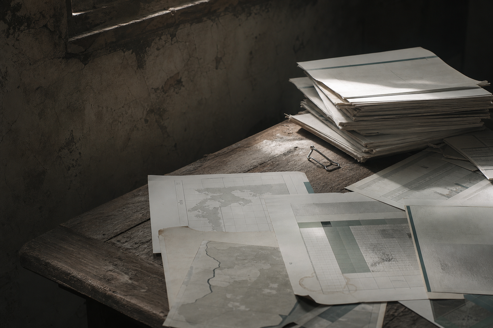
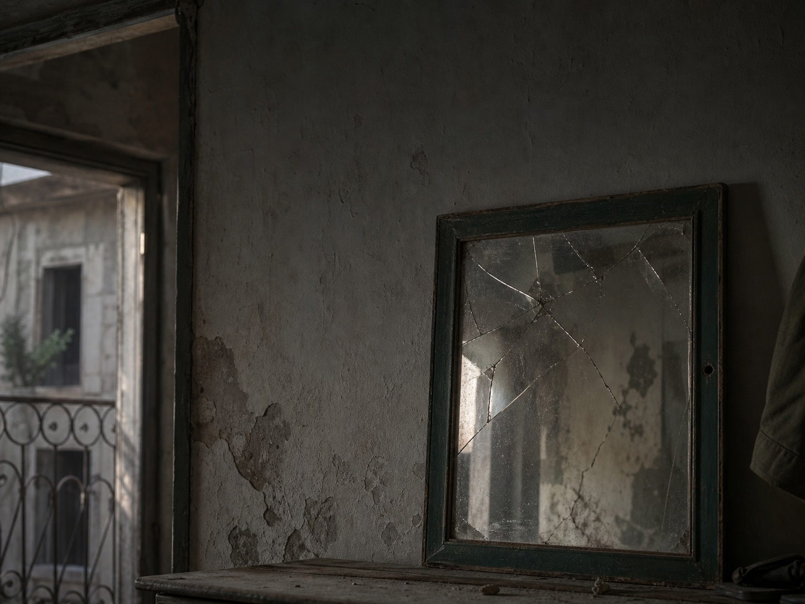
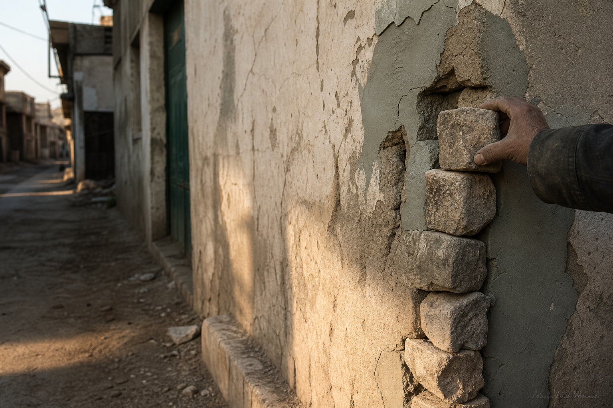
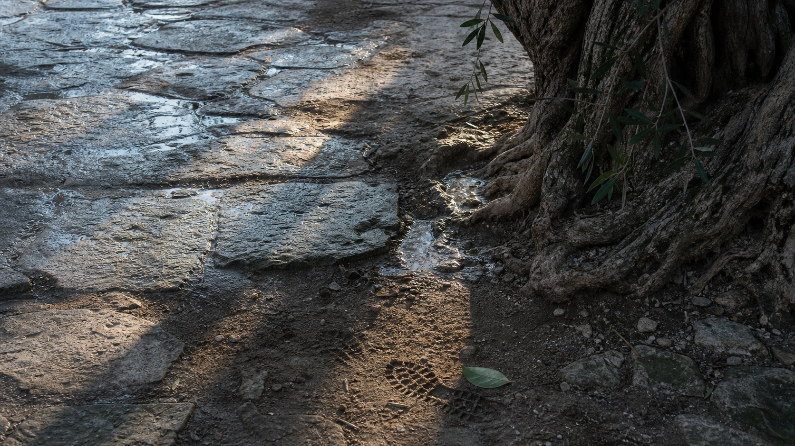

خذوا وصفاتكم
خذوا فيدرالياتكم، ولا مركزياتكم، وحلولكم المعلّبة، وابحثوا لها عن دول أخرى..
مئة عام كاملة، لم تكن سوريا خلالها تخوض معركة بناء دولة فحسب، بل كانت تخوض معركة على روحها نفسها.

قرن من الاستبدال
مئة عام من المحاولات المتواصلة لاقتلاع هوية متجذرة في وجدان الناس، وهوية لم تكن مثالية ولا معصومة من الأخطاء، لكنها كانت ابنة هذه الأرض، نبتت فيها كما تنبت أشجار الزيتون في سفوحها، وكما يجري الماء في أنهارها. كان يمكن تطويرها، نقدها، إصلاحها، أو حتى تجاوز بعض جوانبها، لكن ما جرى لم يكن إصلاحاً، بل محاولة استبدال كاملة.
جاءت أجيال من المنظرين والحالمين بالمشاريع المستوردة، يحمل كل منهم وصفة جاهزة لإنقاذ سوريا. مرة باسم القومية، ومرة باسم التقدمية، ومرة باسم الحداثة، ومرة باسم الثورة على الماضي.
وفي كل مرة كان المطلوب واحداً: أن يتوقف السوري عن أن يكون نفسه، وأن يتحول إلى نسخة من فكرة وُلدت في مكان آخر.
فذابت الملامح، واختلطت المفاهيم، وضاعت الحدود بين ما نحن عليه وما يريد الآخرون لنا أن نكونه.

الكائن الهجين
لا نحن أصبحنا الغرب الذي حاول البعض تقليده، ولا بقينا كما كنا، ولا نجحنا في إنتاج نموذجنا الخاص، فخرج من رحم ذلك كله كائن هجين، مشوه، لا يعرف إلى أي مرآة ينظر، ولا إلى أي تاريخ ينتمي، ولا أي مستقبل يريد.
ثم جاءت الثورة السورية.
وجاءت بعدها سنوات الدم والخراب والتهجير والانتظار الطويل.
من نحن؟
وحين ظن كثيرون أن سوريا انتهت، كانت في الحقيقة تعود إلى سؤالها الأول: من نحن؟
ولذلك لم يكن غريباً أنه فور لحظة التحرير، خرجت علينا الأصوات ذاتها بأسماء جديدة وشعارات جديدة.
فيدرالية، لا مركزية، حكم ذاتي، نماذج مستوردة من الشرق والغرب، وصفات جاهزة معلبة تنتظر فقط أن توضع على جسد سوريا، وكأن السوري ممنوع عليه دائماً أن يكتب قصته بيده، وأن يبني دولته بعقله، وأن يصوغ هويته من ذاكرته وتاريخه وثقافته.
لكن شيئاً جوهرياً تغير هذه المرة.
الكائن المشوه الذي عاش قرناً كاملاً على استعارة الوجوه والأفكار والهويات مات.
مات تحت ركام الأكاذيب التي حملها، ومات في شوارع المدن التي عادت تتعرف إلى نفسها، ومات يوم اكتشف السوريون أن الأمم لا تُبنى من كتالوجات مستوردة، ولا من أفكار تُشحن في الحاويات القادمة من وراء البحار.

طفل اسمه سوريا الجديدة
فاليوم، هناك طفل وُلِد من بين الأنقاض.
طفل اسمه سوريا الجديدة.
لا يحمل عقدة النقص أمام أحد، ولا يبحث عن هوية في كتب الآخرين، ولا ينتظر شهادة قبول من الشرق أو الغرب. طفل سيكبر وهو يعرف أن هويته ليست سلعة مستوردة، بل ميراث أمة كاملة.
سيبني هويته الوطنية السورية حجراً فوق حجر، مستنداً إلى دين هذه البلاد، وثقافتها، وعاداتها، وأعرافها، وذاكرتها، وتنوعها الحقيقي الذي عاش قروناً قبل أن تكتشفه نظريات السياسة الحديثة.

سوريا نفسها
ولأول مرة منذ مئة عام، لن تكون سوريا مشروعاً لتطبيق أفكار الآخرين، بل ستكون سوريا نفسها.
وهذا وحده كافي ليجعل كل مشاريع الاستيراد، القديمة منها والجديدة، تبدو كأطلال مرحلة انتهت إلى غير رجعة. لأن الهوية التي نجت من قرن كامل من المحو، لا يمكن لأحد أن يمحوها بعد اليوم..